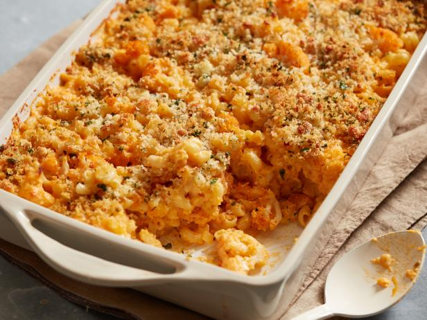

Baked Mac & Cheese
Ingredients
Macaroni
- 250 g / 8 oz macaroni (elbow pasta)
- 1 tbsp unsalted butter
Topping
- 2/3 cup panko breadcrumbs
- 2 tbsp unsalted butter
- 1/4 tsp salt
Sauce
- 60 g / 4 tbsp unsalted butter
- 1/3 cup plain flour (all purpose flour)
- 3 cups milk, warmed
- 3 cups shredded cheese
- 3/4 tsp salt
Instructions
Pasta
- Bring 15 cups of water to the boil
- Once surface bubbling, add macaroni & cook for 10-12mins
- Drain macaroni & return to pot
- Add butter & toss till melted
- Set aside to cool while making sauce
Sauce
- Preheat oven to 180C/350F.
- In a large saucepan, melt butter over medium heat
- Add flour, while stirring constantly for a minute.
- Add about 1 cup of the milk, whisk to dissolve & add rest of milk
- Mix in salt and Seasonings if using
- Cook, stirring/whisking regularly, for 5-8 mins till thickened
- Remove from stove, add cheese and stir
Topping
- Mix together butter, breadcrumbs & salt
Assembling
- Pour Sauce into pot with macaroni & stir quickly
- Then pour into a skillet/baking dish
- Sprinkle with breadcrumb topping
- Bake for 25 minutes or until top is light golden
